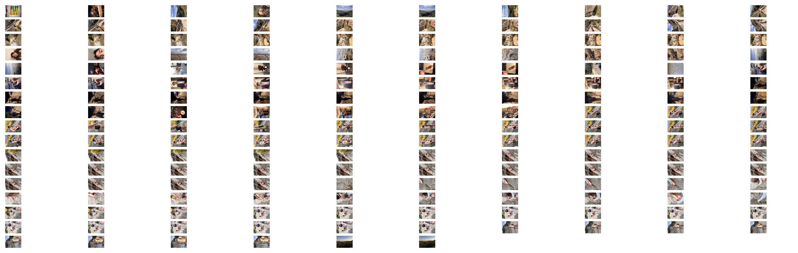

import osxphotos
from PIL import Image as PILImage
from IPython.core.pylabtools import figsize
import datetime as dt
import numpy as np
from colorthief import ColorThief
import math
import matplotlib.pyplot as pltIntroduction
introduction
osxphotos Python Library
# Retrive photos library from system path
photosdb = osxphotos.PhotosDB()
# Begin Jan 1, 2025
start = dt.datetime(2024, 1, 1)
# End Mar 31, 2025
end = dt.datetime(2026, 3, 31)
# Extract photo items, restrict dates
photos = photosdb.photos(from_date=start, to_date=end)Filtering
Our filtering results: Only photos that my camera has actually ‘taken’
Exclude:
- Screenshots
- Videos
- Saved pictures from internet
Code
def photo_filter(photo):
# Exclude screenshots
if photo.screenshot:
return False
# Exclude movies
if photo.ismovie:
return False
# Exclude saved photos
if photo.exif_info.aperture is None:
return False
return TrueSince the photos object is a list, a simple for loop can apply the filtering function.
photos_filtered = [p for p in photos if photo_filter(p)]As of now, photos aren’t sorted by date.
for photo in photos_filtered[:5]:
print(f'Date: {photo.date}')Date: 2024-07-12 15:18:32.480000-10:00
Date: 2026-01-24 21:35:38.136000-08:00
Date: 2024-01-29 20:25:15.278000-10:00
Date: 2024-06-04 11:28:48.478000+09:00
Date: 2024-06-07 09:48:30+00:00Sorting
photos_sorted = sorted(photos_filtered, key=lambda p: p.date)
# Check sort
for photo in photos_sorted[:5]:
print(f'Date: {photo.date}')Date: 2024-01-01 00:58:47.499000-10:00
Date: 2024-01-02 11:17:37.636000-10:00
Date: 2024-01-02 11:18:54.147000-10:00
Date: 2024-01-02 11:18:56.747000-10:00
Date: 2024-01-02 11:19:09.531000-10:00Viewing
Code
def display_valid_photos(photolist, figsize):
# Initialize valid photo empty list
valid_photos = []
# valid_colors = []
# Initialize photo error count
err_count = 0
# Iterate through photos
for photo in photolist:
try:
valid_photos.append((photo.path, PILImage.open(photo.path)))
except Exception:
err_count += 1
# Plot valid photos
cols = 10
rows = math.ceil(len(valid_photos) / cols)
fig, axes = plt.subplots(rows, cols, figsize=figsize)
axes = axes.flatten()
for i, (path, img) in enumerate(valid_photos):
# Photo row
axes[i].imshow(img)
axes[i].axis('off')
# # Color swatch row
# color = get_color(path)
# valid_colors.append(color)
# swatch = PILImage.new("RGB", (50, 50), color)
# axes[i * 2 + 1].imshow(swatch)
# axes[i * 2 + 1].axis('off')
for ax in axes[len(valid_photos):]:
ax.axis('off')
print(f'Error in {err_count} photos.')photos_feb26 = [p for p in photos_sorted if ((p.date.year == 2026) & (p.date.month == 2))]display_valid_photos(photos_feb26, figsize=(20,6))Error in 64 photos.
Color Extracting
Subset photos for testing & extract colors.
Photos:
- December 21, 2025, Japan fall colors (orange) [3rd of the day]
- December 12, 2025, Maks beach (?) [5th of the day]
- March 15, 2025, Illenium concert (purple) [3rd of the day]
- June 12, 2024, Hydrangea (green/purple) [22nd of the day]
Code
def photo_pick(photolist, date_str, photo_position = None, exact = False):
datetime = dt.datetime.strptime(date_str, "%Y-%m-%d")
year_input = datetime.year
month_input = datetime.month
day_input = datetime.day
if exact:
photo_day = [p for p in photolist if ((p.date.year == year_input) & (p.date.month == month_input) & (p.date.day == day_input))]
photo_exact = photo_day[photo_position - 1]
return photo_exact
else:
photo_day = [p for p in photolist if ((p.date.year == year_input) & (p.date.month == month_input) & (p.date.day == day_input))]
return photo_day# Function works!
test_day = photo_pick(photos_sorted, "2025-01-01", exact = False)
check_test_day = [p for p in photos_sorted if (p.date.year == 2025) & (p.date.month == 1) & (p.date.day == 1)]
test_exact = photo_pick(photos_sorted, "2025-01-01", photo_position=2, exact=True)jun12 = photo_pick(photos_sorted, "2024-6-12", exact=False)
photo1 = photo_pick(photos_sorted, "2024-6-12", photo_position=22, exact=True)
mar15 = photo_pick(photos_sorted, "2025-3-15", exact=False)
photo2 = photo_pick(photos_sorted, "2025-3-15", photo_position=3, exact=True)
dec12 = photo_pick(photos_sorted, "2025-12-12", exact=False)
photo3 = photo_pick(photos_sorted, "2025-12-12", photo_position=5, exact=True)
dec21 = photo_pick(photos_sorted, "2025-12-21", exact=False)
photo4 = photo_pick(photos_sorted, "2025-12-21", photo_position=3, exact=True)test_photos = [photo1, photo2, photo3, photo4]